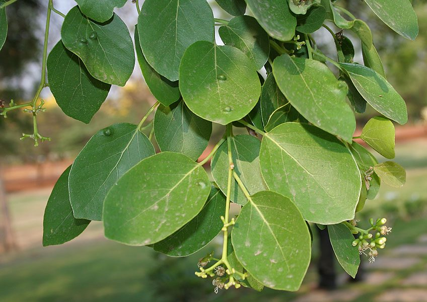

लसोड़ाLasora
Cordia dichotoma · Cordiaceae · FLR-0050

- Scientific name
- Cordia dichotoma G.Forst.
- Family
- Cordiaceae
- Hindi
- लसोड़ा
- Status here
- native
- IUCN
- not evaluated
When to look कब देखें
Present all year.
लसोड़ा / Lasora
Cordia dichotoma G.Forst. — Cordiaceae
लसोड़ा (गुंदा) — उत्तर प्रदेश के ग्रामीण अंचलों, खेतों की मेड़ों और शुष्क जंगलों में पाया जाने वाला एक बहुपयोगी, मध्यम आकार का पर्णपाती (deciduous) देशी पेड़ है। यह 10 से 15 मीटर की ऊंचाई तक बढ़ता है, जिसकी शाखाएं थोड़ी झुकी हुई होती हैं। इसके पत्ते चौड़े, अंडाकार और खुरदरे (papery) होते हैं। वसंत ऋतु में (मार्च-अप्रैल) इसमें सफेद-क्रीम रंग के छोटे, सुगंधित फूल आते हैं। ग्रीष्म ऋतु के आगमन पर (मई-जुलाई) इसमें गोल, पीले-हरे रंग के फलों के गुच्छे लगते हैं जो पकने पर गुलाबी-भूरे या हल्के लाल हो जाते हैं। इन फलों के भीतर एक बहुत ही चिपचिपा, लसदार गूदा (mucilaginous pulp) होता है। कच्चे लसोड़े का उपयोग गांवों में पारंपरिक अचार (लसोड़े का अचार) और सब्जी बनाने के लिए बहुत चाव से किया जाता है। इसका पेड़ पक्षियों के लिए भोजन का एक बड़ा स्रोत है।
Quick Identification त्वरित पहचान
| Feature | Description |
|---|---|
| Form | Medium-sized deciduous tree (10–15 m) with a short, crooked trunk and a dense, rounded, drooping canopy |
| Leaves | Alternately arranged, simple, broad-ovate to elliptic (7–15 cm long), margin entire or slightly wavy; rough and sandpapery on the upper surface |
| Flowers | Tiny (5–8 mm), bisexual, white or cream-colored, 5-lobed, arranged in loose, repeatedly forked clusters (dichotomous cymes) at leaf bases or twig ends |
| Fruit | Round to ovoid cherry-like drupe (1–2 cm diameter), yellowish-green to pinkish-yellow when ripe; contains a single hard stone surrounded by extremely sticky, clear mucilage |
| Bark | Greyish-brown, rough, cracking into shallow longitudinal fissures |
Field tip: Any medium-sized tree with rough leaves that carries clusters of round, yellow-green cherry-like fruits containing an incredibly sticky, glue-like transparent pulp is a Lasora tree.
Morphology आकारिकी
Biometrics (typical measurements for adult specimens in eastern UP plains):
| Feature | Measurement |
|---|---|
| Tree height | 10–15 m |
| Leaf length | 7–15 cm |
| Leaf width | 5–10 cm |
| Flower diameter | 5–8 mm |
| Fruit diameter | 1–2 cm |
Leaves: The leaf petiole is 2–5 cm long. Leaves are 3–5 veined from the base, with prominent lateral veins. The texture is leathery but rough to the touch, with a smooth lower surface except along the veins.
Fruit: The calyx of the flower persists and enlarges at the base of the fruit, forming a shallow, ribbed cup (saucer-like cupule) that holds the drupe.
Associated Species / Interactions सहजीवी संबंध
Frugivorous wildlife magnet.
- Avian food resource: The sweet, sticky pulp of ripe fruits is highly favored by local birds, including
[BRD-0006 Common Myna], Jungle Babblers ([BRD-0035 Jungle Babbler]), Asian Pied Starlings ([BRD-0012]relative), and red-vented bulbuls ([BRD-0017]relative). These birds are the primary seed dispersers. - Mammalian visitors: Fruit bats (
[MAM-0001 Indian Flying Fox]) and squirrels ([MAM-0004 Palm Squirrel]) feed on the ripening fruits during summer nights and mornings. - Insect associates: The small cream flowers are visited by wild honeybees, butterflies, and hoverflies for nectar, facilitating pollination.
Life Cycle / Phenology जीवन चक्र
- Leaf fall: Sheds its leaves in mid-winter (January–February), remaining bare for a short period.
- Flowering: Clusters of small white flowers bloom alongside the new flush of bright green leaves in early spring (March–April).
- Fruiting: Green fruits develop rapidly in April, ripening to a yellow-green or pinkish hue between May and July.
- Dormancy: Vegetative growth continues during monsoon (July–September) before entering slow growth in winter.
Pests and Diseases कीट और रोग
- Leaf Roller: Caterpillars of pyralid moths roll leaves into tubes and feed on the inner tissue, skeletonizing foliage.
- Fruit Flies: Ripening fruits are targeted by Bactrocera fruit flies, which lay eggs inside the pulp, causing premature rot and drop.
- Leaf Spot: Fungal diseases (Cercospora spp.) cause circular brown spots on leaves during humid monsoon months.
Agricultural / Human Relevance कृषि प्रासंगिकता
Traditional food crop and agroforestry.
- Culinary pickle: The unripe green fruits are harvested in large quantities in May to make the traditional Lasore ka Achar (lasora pickle) with mustard oil and spices, a popular regional delicacy in eastern UP. The fruits are also boiled and cooked as a vegetable.
- Natural adhesive: The highly sticky, mucilaginous pulp of ripe fruits was traditionally collected by villagers and children to use as a natural glue for paper, envelopes, and kites.
- Fodder and fuel: The foliage is pruned as a maintenance fodder for cattle. The wood is moderately hard and used for light construction, tool handles, and farm fence posts.
Traditional and Ethnobotanical Use
- Cough demulcent: The sticky fruit pulp is eaten traditionally as a demulcent to soothe sore throats, relieve dry coughs, and ease chest congestion.
- Digestive tonic: In Ayurveda, the tree is known as Bahuvar, and a decoction of the bark is used to treat dyspepsia, abdominal pain, and diarrhea.
- Wound paste: Crushed fresh leaves are applied topically onto boils, cuts, and minor skin inflammations to promote healing.
- Joint relief: Bark paste is applied externally to reduce swelling and pain in arthritic joints.
Expected Locally स्थानीय रूप से अपेक्षित
Not a field record. Written from published accounts for eastern Uttar Pradesh. No confirmed local sighting yet — if you have seen it, that is what the atlas needs.
अभी तक स्थानीय पुष्टि नहीं। यह विवरण प्रकाशित स्रोतों से है, किसी अवलोकन से नहीं।
Commonly found near homesteads, village commons, and temple grounds in Basti district. Sighted frequently in rural areas of Harraiya, Vikramjot, and Kaptanganj blocks. During June, many old trees are climbed by local youth to harvest fruits for pickling.
Distribution वितरण
Global range: Native to India, Pakistan, Nepal, Sri Lanka, Myanmar, China, Southeast Asia, and northern Australia.
In India: Widespread in sub-Himalayan tracts and plain states, particularly abundant in western and northern plains.
In Uttar Pradesh: Present in all plain districts, commonly cultivated in rural areas.
In Basti district / eastern UP: Common native resident tree.
Research Questions शोध प्रश्न
- How does the shelf life and quality of Cordia dichotoma pickles differ based on the harvesting stage of unripe fruits in May? / मई में कच्चे फलों को तोड़ने के चरण के आधार पर लसोड़े के अचार की शेल्फ लाइफ में क्या अंतर आता है?
- What are the primary chemical properties of the fruit mucilage that give it adhesive properties, and can it be used as a bio-glue? / लसोड़े के गूदे में कौन से रासायनिक गुण पाए जाते हैं जिसके कारण यह इतना चिपचिपा होता है?
- How does the feeding preference of frugivorous birds change between Lasora fruits and other summer fruits like Jamun (Syzygium cumini) in Basti?
- Is the bark decoction of Cordia dichotoma effective in reducing thermal activity (fever) in local livestock?
- Can children use the sticky pulp of a ripe Lasora fruit to glue two sheets of paper together and record how many minutes it takes to dry? — A simple natural materials chemistry experiment.
Similar Species मिलती-जुलती प्रजातियाँ
| Species | Key Difference | हिंदी |
|---|---|---|
Ziziphus mauritiana (Ber [FLR-0046]) | Branches have thorns; leaves are woolly-white below with 3 main veins; fruit is a sweet dryish drupe (no sticky mucilage). | बेर — कांटेदार टहनियाँ, नीचे से सफेद पत्ते, फल में लसदार गूदा नहीं |
Limonia acidissima (Wood Apple [FLR-0044]) | Leaves are compound with winged stems (petioles); branches have thorns; fruit is large (5–10 cm) with a hard woody shell. | कैथा — संयुक्त पत्ते, बड़े गोल लकड़ी जैसे फल |
| Cordia sinensis (Grey-leaved Saucerberry) | Leaves are much narrower and opposite; shrub or small tree; fruits are smaller and bright orange-red when ripe. | गोंदी — संकरे पत्ते, छोटे चमकीले लाल फल |
Taxonomy & Classification वर्गीकरण
Original description. Georg Forster described the species as Cordia dichotoma in 1786 in Florulae Insularum Australium Prodromus (p. 18). The type locality was New Caledonia. The genus name Cordia honors Valerius Cordus, a 16th-century German physician and botanist. The specific name dichotoma is derived from the Greek dichotomos (divided in two/forked), referring to the dichotomously branched flower clusters.
Subspecies. Monotypic — no subspecies are recognized.
Family and order placement. Placed in the order Boraginales. Historically placed in Boraginaceae, but currently separated into the family Cordiaceae Link by many taxonomic authorities (including GBIF), which contains trees and shrubs with drupaceous fruits and plicate cotyledons.
Phylogenetic notes. Cordia is a diverse genus of approximately 300 species of trees and shrubs adapted to tropical environments.
IUCN status rationale. Not evaluated (NE) by the IUCN Red List. It is widely distributed, commonly planted, and has stable populations in South Asia, presenting no conservation concerns.
Photo Gallery फोटो गैलरी
References संदर्भ
- Forster, G. (1786). Florulae Insularum Australium Prodromus. Göttingen, p. 18. [original description]
- Brandis, D. (1906). Indian Trees. Archibald Constable & Co., London.
- Hooker, J. D. (1883). The Flora of British India. Vol. 4. L. Reeve & Co., London.
- Warrier, P. K., Nambiar, V. P. K., & Ramankutty, C. (1994). Indian Medicinal Plants: A Compendium of 500 Species. Vol. 2. Orient Longman, Madras.
- Botanical Survey of India. State Flora Series: Flora of Uttar Pradesh. BSI, Kolkata.
- GBIF Occurrence Data — Cordia dichotoma (2026). GBIF taxon key: 5341270.
Source file: species/flora/trees/lasora.md